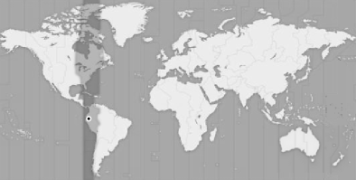

I'm a freelancer Ruby on Rails developer, thinking always with a concept of simplicity, I try to make my applications useful and accessible to any person through the use of internationally standards of development.
Software development is not static, it is dynamic. Based on this concept, I consider myself a person who is self-managed and continuously adapt to the project evolution using agile methodologies like Scrum and using Free Software or Open Source tools, so I in this way in short periods I cover the customer's expectations while the customer test their products and discover new requirements.
I'm Software Engineer, so I have been working in Ruby on Rails since 3 years ago, I like this framework because I love the Ruby Language it is very pragmatic and easy to read also The Rails community is amazing because they follow the most of best developer practices and always trying to improve something.
At this time I work making Web Applications using Rails 3, JavaScript, AJAX, API's, XHTML, CSS, JSON, etc., you know very cool things (-: .
I know some frameworks but I prefer not mention an specific framework like a (JQuery, Facebook API, Twitter API, GoogleMaps, etc) because basically I adapt to any API or Framework with a good documentation
Also I enjoy working with a complex algorithms or math solutions (I mention this as a separate statement because the solution for an specific problem, some times is not related with an specific technology)
I have worked in private and public projects, these are some projects:
I worked for an Spain Company, I was developing a system to manage orders, contracts and billing for web hosting services or hosting. The system is still in development and private.
Konyapa.com is E-Comerce appplication that allows to publish classified announcements,realize auctions, handle the reputation of the buyers and sellers, compare announcements and especially to join in a transparent way the most popular social networks of Internet, I worked with Facebook making a little application
This application web is not like the typical applications of classified announcements, goes beyond, this offer powerful tools to the users in order that they exploit his imagination in the promotion of his classified announcements, beside offering some kind of "Konyapa", "Konyapa" is like a value added to his advertisement that increases the buyers interest to acquire a product or service
Latinhire is Chile's company, which offer top professionals to international companies, my work from 2008 until March, 2009 consisted in developing new features for an existing system that allows recruit professionals in all Latin America.
Besides I developed a new software that complements itself with the already existing system that allows to manage payments and transfers, but for confidential reasons I cannot reveal the address of those web sites
This Site is a meeting point for potential customers who need products and services that your company offer, while their company knows and relates to other companies in its sector. This project was a pilot. I did it when I was finishing my university studies to evaluate the potential of Ruby on Rails platform (-:
Now I'm alone in this business I work from My House but I hope some day have a good team to work from here for the rest of the world
I'm located in South America Ecuador, Eastern Standard Time GMT- 5:00

My E-mail, Twitter, Linkedin profile, etc.
joselo@nationcode.com
twitter@joselo
My Linkedin Profile
My Blog